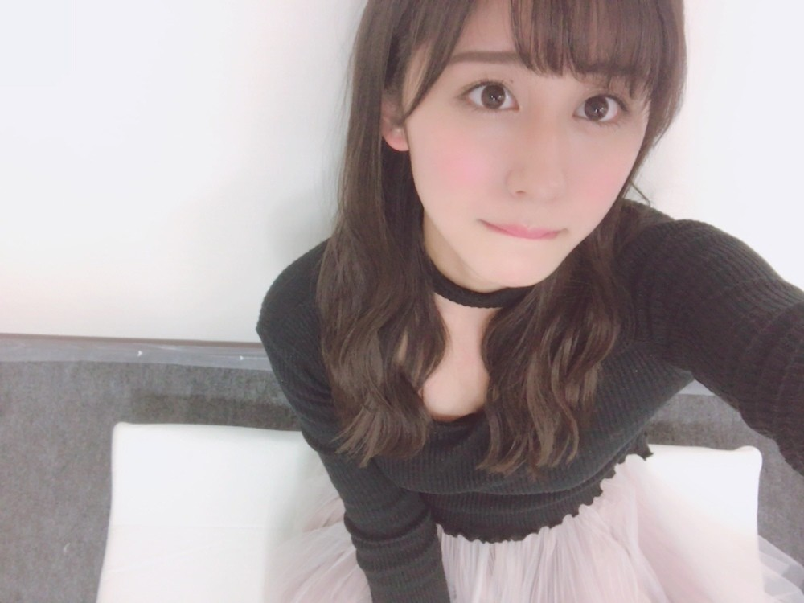

| 2017/03 14 Tue | マシュマロ。 |
今日はホワイトデー。マシュマロの日。キャンディーの日。数学の日。円周率の日。パイ(π)の日。
3.14は沢山の記念日がありますね！
ホワイトデーにお返しすることから
マシュマロやキャンディーの日とも
言われるんだそうです◎
私マシュマロ大好きだから
ホワイトデーよりもマシュマロの日として
覚えておこうかな笑
あと、ホワイトデーが有名だけども
3.14が円周率ということから
数学の日とも呼ばれるんです！
3.141592..くらいまでしか覚えてませんが笑
沢山言える人凄いな〜
マシュマロみたいな洋服☺︎
----------------------------------------------♡
！ChihAnswer！
 フタツムジさん
フタツムジさん
・ちーちゃんはつむじが２つあるって言ってたけど寝癖は大丈夫？
→寝癖ひどいです！
乾かしているし、寝癖が付きにくいようにと
髪の毛を全部上にして寝てるのにも関わらず
寝癖にいつも悩まされています...
メイクさんにも前言われたの〜笑
後頭部が特に！
つーちゃんさん
・サンドイッチ繋がりで、サンドウィッチマンは好きですか？
→好きです！サンドウィッチマンさん！
サンドウィッチマンさんのネタが好きで
家族で爆笑しながらテレビ見ています笑
お父さんもハッハッハ！って
耳障りくらいに大きい声で笑うの...
♡ひなた♡さん
・一期生で1番初めに喋ったのは誰ですか？
→オーディションの時に一緒だったのは
生駒、れなりん、幸奈！
だから誰が1番最初だったのかは
覚えてないけど、
三次審査の会場からから四次審査の会場に
向かうバスの中でみんなで
ワイワイと話してたのは覚えてるよ〜
懐かしい(｡･o･｡)ﾉ
まみまみさん
・ちーちゃんの今1番好きなキャラクターは？
→ディズニーとパワーパフガールズと
1950sのオールドスヌーピーが好き！
1番は決められないんだけど...笑
幅広いかもしれない！
モリリンさん
・最近、映画は見ましたか？
→「ラ・ラ・ランド」と、
「彼らが本気で編むときは、」を観ました！
ララランドは映像の色彩が綺麗で
思わず溜息が出ました。
あとは音楽が素敵すぎて、
今ずっとサントラを聞いています笑
彼らが本気で編むときは、は
それぞれの役者さんの演技が上手すぎて
どんどん惹きこまれていくのが分かりました。
ジェンダーレス問題についても考えさせられる良い映画でした。
文が続くので約一年前の写真を
急に載せたりしてみます。
図書委員長⊿だいき⊿さん
・車好きの人ってどう思いますか？
→良いと思います！！
私の父も車好きなので
その影響なのかカッコいい外車とかみると
素敵〜！と思います◎
車種とかに詳しい訳ではないですが...
趣味があるって楽しいですよね☺︎
BaTaKeさん
・高校卒業の時を覚えていますか？もし、覚えていたらエピソード的なのを教えて欲しいです！
→実は卒業式の日が
アンダーメンバー全員での
大切な撮影の日と被ってしまって...！
学校と現場を行ったり来たりしながら
卒業を迎えたのを覚えています〜
大変だったけど逆によく覚えてる！笑
もうあれが2年前だなんて...(´ｰ｀)
たかみ〜ハイスクールさん
・ちーちゃんが子供の頃好きだった少女漫画を教えてください！
→私は生粋のちゃおっ娘だったので
「きらりん☆レボリューション」と
「めちゃモテ委員長」が大好きでした☺︎
毎月毎月お小遣いで買って
読むのが楽しみだったな〜
付録も豪華だったのでいつも嬉しかった！
かずさん@アメフト写真家
・ちーちゃんが写真を撮る時に気を付けているのは構図ですか？それとも被写体の色彩感？
→前は自分のフィーリングで
写真を撮っていたのですが、
最近は色彩感を気を付けています！
青味がかった色だったり
温かみのある暖色系の色だったり
どの色が被写体に合うのかを
色を変えて試しながら撮っています。
何かアドバイス等あったら
みなさん教えてください☺︎
今日はここまで！！
皆さん毎週毎週ありがとうございます(๑˃̵ᴗ˂̵)
-------------------------------------------------♡
♬ ChihaMusic
「Another Day Of Sun」La La Land Castさん
この曲が大好き！！
今日家でずっと流していたら
お母さんにずっと聞いてるねって言われたくらい笑
歌詞が本当にいい...
勇気をもらえる！
"And when they let you down
You'll get up off the ground
'Cause morning rolls around
And it's another day of sun"
上手くいかなくても
立ち上がれるの
だってまた朝はやって来るから
そうまた晴れの日がやってかるから
なんて素敵な歌詞...
辛くても頑張れるね。
また明日は別の日。

座っているのはエアウィーブの上。
ふかふかなのでよくお休みしてます☺︎
今日の侍ジャパンの試合も勝利して
選手の皆さんの笑顔、
監督の声、場内の歓声が素敵だったので
気持ちよく寝られそうです〜
代打でここぞという時に
必ず結果を残す内川選手、
一打目でホームランを打つ山田選手、
流石でした！！！
おやすみ
斎藤ちはる
コメント(253)
2017/03/14 23:54